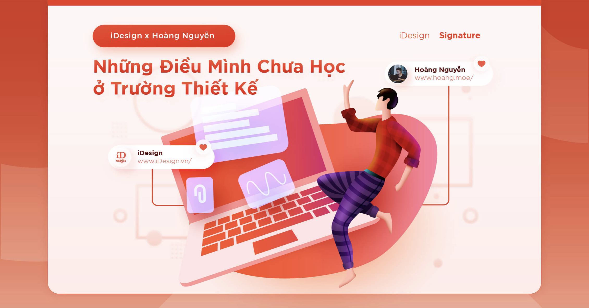
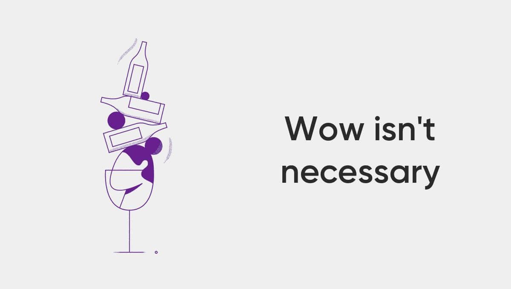
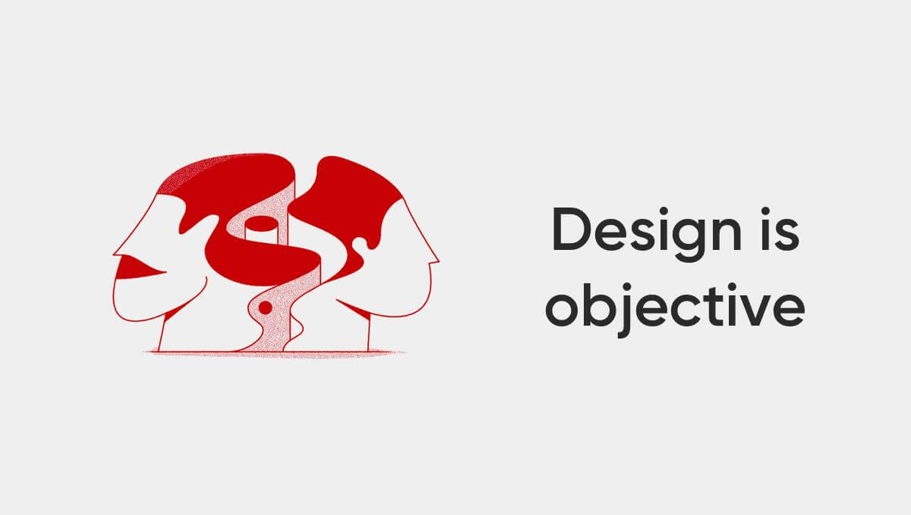
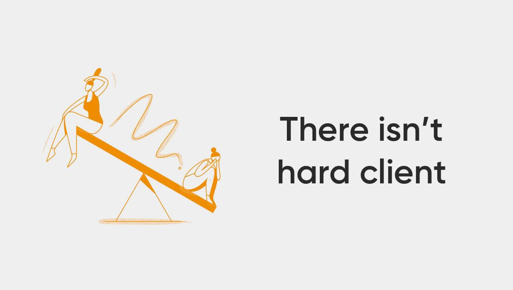
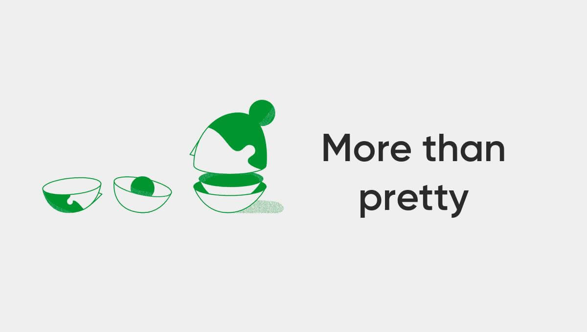
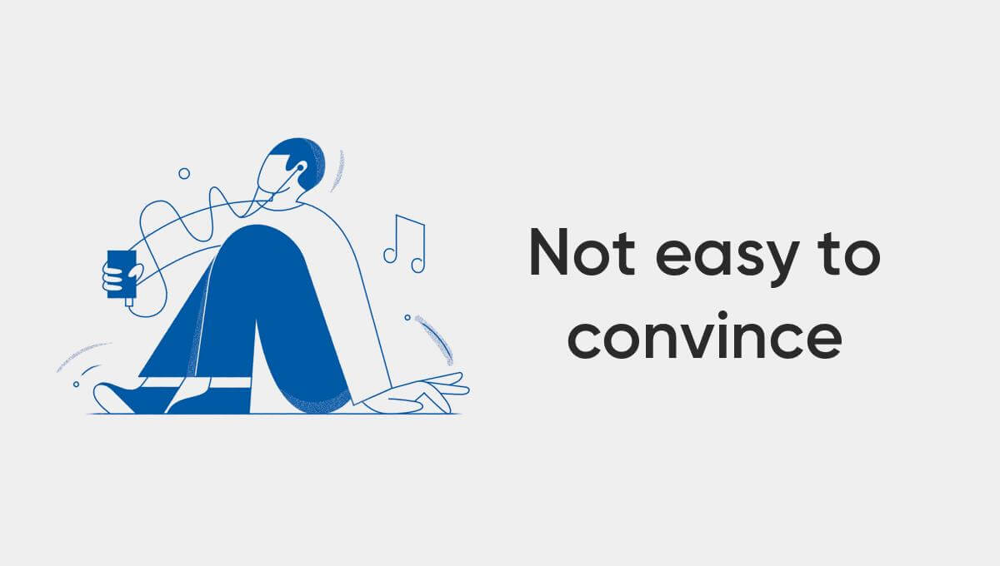
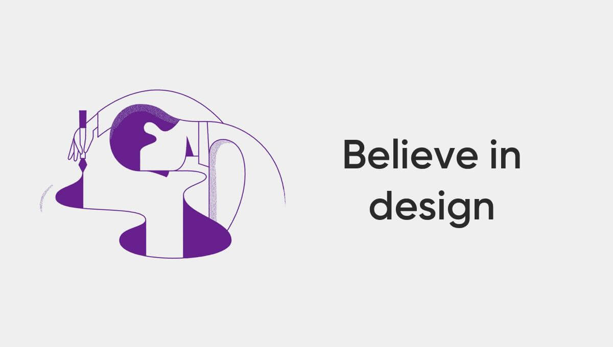

Những điều mình chưa học ở trường thiết kế
Đi học thiết kế ở trường đại học là một trong những quyết định đúng đắn nhất cuộc đời mình. Ở đấy mình được gặp những giảng viên truyền cảm hứng, những người bạn tốt, nhiều kỷ niệm đẹp, và được học nhiều thứ làm nền tảng cho công việc sau này.
Tốt nghiệp rời khỏi trường mình chọn hướng khác với những gì được học, mình xoay xở trong lĩnh vực mới, kiến thức mới và tự học những kỹ năng mới. Bẵng đi một lúc, giờ mình đã chuẩn bị bước qua năm thứ 10 của hành trình này, công việc hiện tại là Product Design Coach ở GEEK Up.
Với kết quả khả quan trong việc học, mình từng cho rằng công việc cũng sẽ suôn sẻ dễ dàng như thế. Rồi mình nhận ra những thứ được học trong trường có thể cho chúng ta một bước khởi đầu tốt, nhưng để làm tốt hơn trong công việc thiết kế, ta sẽ cần học nhiều hơn thế.
Trong một dịp, mình có cơ hội chiêm nghiệm lại thời sinh viên khi ngồi ghế hội đồng chấm tốt nghiệp ở Đại học Kiến Trúc và Đại học FPT. Tiếp cận với mục tiêu tạo niềm tin, khuyến khích sự cố gắng và chia sẻ thêm các thông tin về những gì sắp tới đang chờ đợi các bạn, những sinh viên chuẩn bị bước chân vào hành trình sự nghiệp. Và mình thấy đây là 6 thứ sẽ tốt hơn nếu được biết khi còn ở thời sinh viên nhiều hoài bão:
1. Ý tưởng không cần Wow – Nó cần thực tế
Hồi còn đi học, mỗi lần bắt đầu dự án là mỗi lần mình bị áp lực về ý tưởng, mình nghĩ, đã học ngành sáng tạo thì phải tìm ra những ý tưởng thật xịn xò. Các đồ án chuyên ngành kéo dài trong 3 tháng sẽ trải qua:
- 1 tháng đầu quanh quẩn muốn tìm ý tưởng thật Wow, tìm ra được cái rất tâm đắc.
- 1 tháng sau loay hoay bế tắc vì không đủ kỹ năng thực hiện được nó hoàn chỉnh.
- 1 tháng cuối cùng, hoặc là đổi sang 1 ý tưởng khác dễ thực hiện hơn, hoặc là nộp thành phẩm không như mình mong đợi.
Thời đấy, mình hoàn thành dự án với sự trăn trở “Phải chi mình có thể làm Photoshop tốt hơn, phải chi mình có thể vẽ Vector xịn hơn,…”. Những hối tiếc này cứ kéo dài suốt cả quá trình học, thỉnh thoảng nó làm mình mất tự tin, thỉnh thoảng cũng làm mình chán nản…
Đi làm được một thời gian, hóa ra những sự trăn trở đó nên tồn tại nhưng đừng biến nó thành sự ám ảnh, bởi thực tế người ta không cần những ý tưởng đột phá nếu nó không thể thực thi.
Định nghĩa hợp lý nhất của quá trình sáng tạo là:
“Sáng tạo là một hành động biến những ý tưởng mới và hữu ích trở thành hiện thực. Sáng tạo bao gồm 2 quá trình: suy nghĩ rồi thực hiện”
– creativityatwork
Ý tưởng thực tế cần thỏa 3 điều kiện:
- Nó là một giải pháp cho vấn đề có thật đang tồn tại.
- Nó là một giải pháp phù hợp với những giới hạn của dự án.
- Những giới hạn này bao gồm: Thời gian, chi phí và năng lực thực thi của những người tham gia dự án.
Nếu hiểu được điều này sớm hơn có lẽ mình đã không bị ám ảnh bởi những trăn trở trên kia và tìm ra cho mình những phương pháp tìm kiếm ý tưởng phù hợp.
2. Thiết kế là sự khách quan – Là phải biết lắng nghe và thu thập từ nhiều phía.
Mình là một sinh viên cứng đầu, theo cả nghĩa đen lẫn nghĩa bóng. Mỗi lần duyệt bài với giảng viên, mình thường khó tiếp thu những góp ý chỉnh sửa, hay thậm chí còn làm 2 phiên bản khác nhau: theo ý giảng viên để được duyệt tiến độ, một theo ý mình để nộp lúc cuối đồ án.
Vẫn là cái suy nghĩ sáng tạo là lĩnh vực thiên nhiều về cái tôi cảm tính, mình muốn thể hiện bản thân qua thiết kế nhiều hơn là để học hỏi. Vô tình mình tạo ra sự chọn lọc thông tin, chỉ muốn nghe những thứ củng cố thêm định hướng mình mong muốn, bỏ ngoài tai những thứ ngược lại.
Hóa ra thiết kế không phải như vậy.
Thiết kế là quá trình tạo ra giải pháp cho vấn đề của người sử dụng sản phẩm.
Khác với nghệ sĩ, nhà thiết kế cần phải đặt mình ở góc nhìn khách quan, hạn chế định kiến cá nhân và đưa ra quyết định dựa trên thông tin xác thực. Để làm được điều này, đòi hỏi họ phải có kỹ năng thu thập và phân tích thông tin phục vụ cho mục tiêu của dự án.
Thầy cô là những người nhiều kinh nghiệm, cũng giống như những người ở vị trí Senior trong công ty, họ xem xét nhận định và cung cấp thêm cho chúng ta những góc nhìn khác cho giải pháp thiết kế.
Hãy xem nó như là những thông tin để cân nhắc, đừng chỉ chăm chăm nghe theo, hay lơ chúng hoàn toàn. Sự khách quan là rất quan trọng cho những thiết kế tốt.
3. Không có khách hàng đáng sợ – Chỉ có Designer sợ khách hàng
Những người đi trước, truyền thông trên mạng, người trong ngành thường lan truyền những “đồn thổi” về khách hàng là những anh A, chị B siêu khó hài lòng. Nào là thẩm mỹ khách hàng thường có vấn đề, nào là họ sẽ lật brief còn nhanh hơn chị bán bánh tráng ngoài chợ,… Tất cả những điều đó tạo ra sự hiểu lầm chung “khách hàng thật đáng sợ”.
Sẽ là “Tiêu chuẩn kép” nếu chúng ta cứ đòi hỏi khách hàng phải dễ chịu và nghe lời tư vấn chuyên môn của mình.
Muốn thay đổi và thuyết phục khách hàng về design, trước tiên ta cần thay đổi cách ta nhìn về khách hàng.
Hãy bắt đầu bằng suy nghĩ, khách hàng là đối tác của chúng ta, họ có kinh phí, ta có chuyên môn. Cần sự hợp tác để hoàn thành mục tiêu chung đó là tạo ra những giải pháp thiết kế phù hợp cho dự án. Vị thế của 2 bên đều ngang hàng, tôn trọng và lắng nghe nhau thay vì anh đúng, tôi sai.
4. Designer có thể làm được nhiều hơn chỉ là làm cho thiết kế đẹp hơn
Thời còn đi học, mình chỉ chăm chăm hướng tới làm sao để thiết kế của mình đẹp hơn. Rồi càng làm, càng thấy bế tắc nó giống kiểu sau khi làm thật nhiều phiên bản cải tiến, thì lại thấy phiên bản đầu tiên mới là đẹp nhất. Hóa ra lúc đó, mình đã theo đuổi một tiêu chí rất mông lung là “cái đẹp”.
Đẹp không phải là tiêu chí duy nhất để đánh giá một thiết kế tốt. Tiềm năng của chúng ta có thể làm tốt hơn thế, đặt vấn đề và giải quyết chúng một cách logic, đồng cảm với người sử dụng, hiểu cách doanh nghiệp kiếm lợi nhuận, bổ sung kỹ năng mềm và rồi bạn sẽ thấy công việc chúng ta không phải là làm cho mọi thứ đẹp hơn, mà là làm cho mọi thứ có ý nghĩa hơn.
5. Để thuyết phục thiết kế của bạn – Sẽ không giống như bảo vệ đồ án
Khi ngồi hội đồng chấm thi, mình hiểu và sẵn sàng châm chước cho các đồ án có thiếu sót trong nghiên cứu cũng như cách đưa ra giải pháp thiếu hợp lý với vấn đề, thậm chí thỉnh thoảng giữa chúng còn không liên quan với nhau. Mình nhìn nhận sự nỗ lực của các bạn, mình tin giảng viên hướng dẫn có ý đồ riêng và bạn cần nhiều loại kỹ năng hơn là chỉ riêng thiết kế.
Mình đã từng không hiểu tư duy thiết kế là tư duy giải quyết vấn đề khi còn ngồi trên ghế nhà trường, chắc có lẽ mình đã không đủ tập trung để hiểu được điều này từ giảng viên. Nhưng nếu mình biết được nó sớm hơn, những đồ án trong trường sẽ có tính thực tế và giúp mình dễ kiếm được công việc sau này.
Kỹ năng giao tiếp, trình bày ý tưởng (communication – presentation) là những loại kỹ năng đặc biệt quan trọng mà mình cần phải học và tập luyện càng sớm càng tốt vì chúng sẽ tạo ra rất nhiều lợi thế sau này.
6. Nếu ta không tin vào thiết kế của mình – Mọi người cũng sẽ như vậy
Không tin vào thiết kế của mình, là dấu hiệu của việc thiếu nghiên cứu đào sâu, dành thời gian và tâm huyết cho điều mình theo đuổi.
Không tin vào thiết kế của mình, cũng xuất phát từ không tin vào năng lực của bản thân mình, đây sẽ là những cảm giác tệ hại và có thể khiến cho bạn bị đóng băng khi có người thử thách thiết kế của bạn.
Mình trải nghiệm rõ điều này ở những dự án qua loa hời hợt, thiếu sự đầu tư, ấp a ấp úng khi giảng viên gặng hỏi về lý do thiết kế.
“Confidence in creativity is not given; It is earned” (Niềm tin vào khả năng sáng tạo không phải được cho, mà là được tìm kiếm)
Làm gì cũng vậy, hãy bắt đầu từ sự tự tin, nhưng không tự kiêu. Tự tin vừa đủ để khách hàng tìm kiếm tới ta hỏi xin lời khuyên và kiến thức chuyên môn, tự tin vừa đủ để ta có thể giữ đam mê, đi tiếp trên hành trình phát triển bản thân mình.
Hy vọng 6 điều này hữu ích với các bạn.